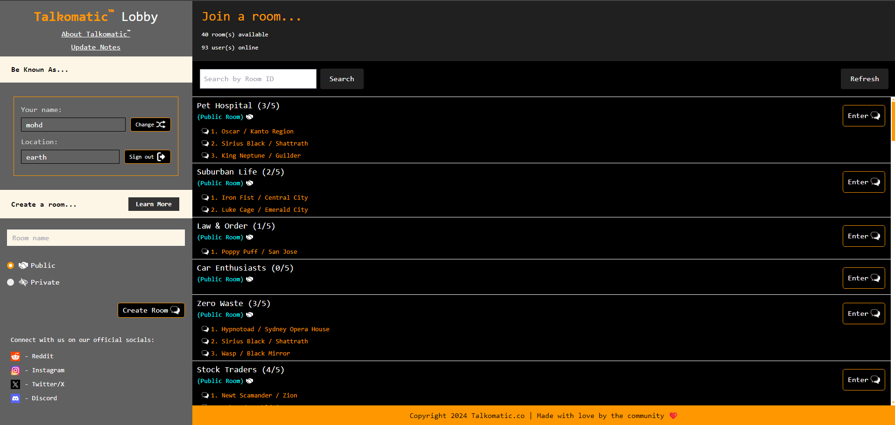
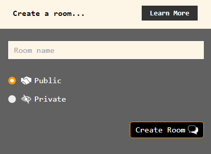
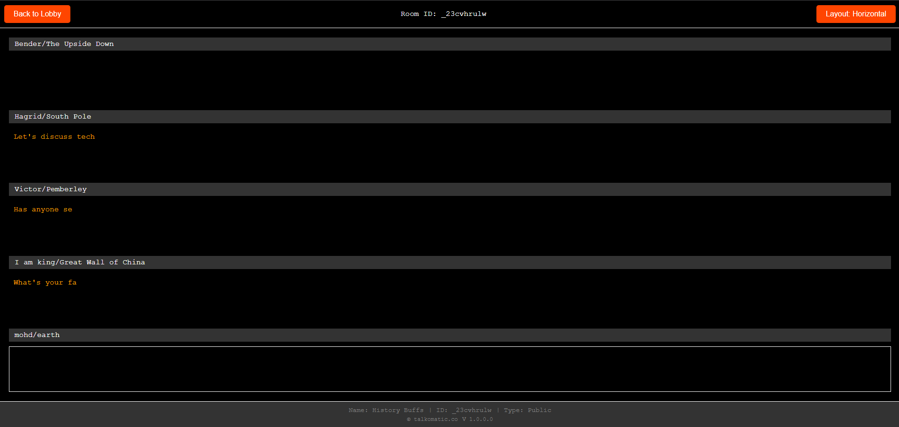

Update Notes
Update Notes for v2.0.3.0
Welcome to version v2.0.3.0 of Talkomatic! This update brings several important bug fixes and a new feature to enhance your chatting experience:
Bug Fixes
-
Direct Redirection to Removed Page
We've fixed an issue where users getting removed would briefly see the homepage before being redirected to removed.html. Now, the redirection happens directly without flashing the homepage.
-
Restricted Usernames and Locations
Usernames and locations that contain banned words are now correctly restricted. Users attempting to use disallowed words will receive an appropriate notification and will not be able to proceed.
-
Special Characters Allowed in Names, Locations, and Room Names
We've resolved the issue where special characters were not allowed in usernames, locations, and room names. You can now include special characters while maintaining the existing character length limit and offensive word checks.
New Feature
-
No Public Active Rooms Message
We've added a feature that displays a message "No public active rooms right now. Create a new room and start the conversation!" if no public rooms are available. This makes it easier for users and provides a better experience than a blank screen.
Looking Ahead
We're continuously working to improve Talkomatic and value your feedback. Stay tuned for more updates and features in the coming weeks. Thank you for being part of our community!
Update Notes for v2.0.2.0
Welcome to v2.0.2.0 of Talkomatic! We're excited to bring you several important bug fixes and new features to enhance your chatting experience. Here's what's new in this update:
Bug Fixes
Duplicate User Prevention
We've resolved an issue where the same user could appear multiple times in a single room on the same device. This fix ensures a more accurate representation of active users in each room and prevents confusion.
- Users can no longer join a room they're already present in from the same device.
- Attempts to rejoin the same room will result in a notification informing the user they're already in the room and will send them back to the lobby.
New Features
Inactivity Management
To maintain active and engaging conversations, we've implemented an inactivity timer:
- Users who remain inactive (don't type) for 2 minutes will be automatically removed from the room.
- This feature helps keep rooms dynamic and frees up space for active participants.
Join Notification Sound
Enhance your awareness of new participants with our new audio feature:
- A subtle sound now plays when a new user joins a room.
- This audio cue helps you stay informed about new chat participants without the need to constantly monitor the user list.
Multi-Room Participation
We've expanded Talkomatic's capabilities to allow for more flexible participation:
- Users can now join multiple rooms simultaneously by opening Talkomatic in different tabs.
- This feature allows you to engage in various conversations or monitor multiple rooms at once.
- Each tab operates independently, maintaining separate room sessions.
Looking Ahead
We're continuously working to improve Talkomatic and value your feedback. Stay tuned for more updates and features in the coming weeks. Thank you for being part of our community!
Update Notes for v2.0.1.0
Welcome to v2.0.1.0 of Talkomatic! In this update, we've implemented significant changes and enhancements to improve your user experience. Below are the key updates:
Home Page Redesign
In this version, the home page has been completely redesigned to enhance usability. The left column now has a cleaner look, with all its components functioning correctly. On the right side, new features have been added, including the ability to search for rooms to join and to refresh the room list.
Private and Public Rooms
Private and public rooms now work seamlessly. Users can create and join any room they desire. Private rooms are not displayed in the public room list, ensuring privacy and exclusivity for their participants.
Redesigned Chatroom Page
The chatroom page has been redesigned for a better look and additional features. Users can now see the room ID, room number, and room name. Additionally, chats can be set to either vertical or horizontal layouts by pressing the toggle layout button at the top right.

Updated User Removal Policy
Instead of a 30-minute ban for typing hateful messages, users are now redirected to a "Removed from Chat" page that explains why they were removed and emphasizes that such behavior is unacceptable. Users can rejoin Talkomatic after 30 seconds.
Improved 'Removed' and 'Why Was I Removed?' Pages
The design of the "Removed" and "Why Was I Removed?" pages has been significantly improved to provide clearer information and a better user experience. These pages now offer more detailed explanations and a more polished interface.